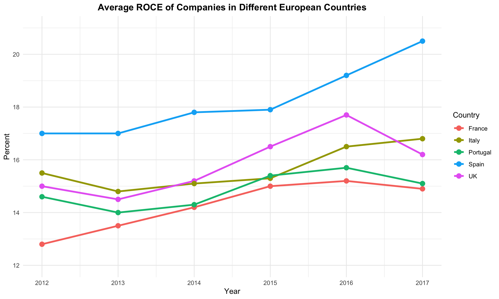
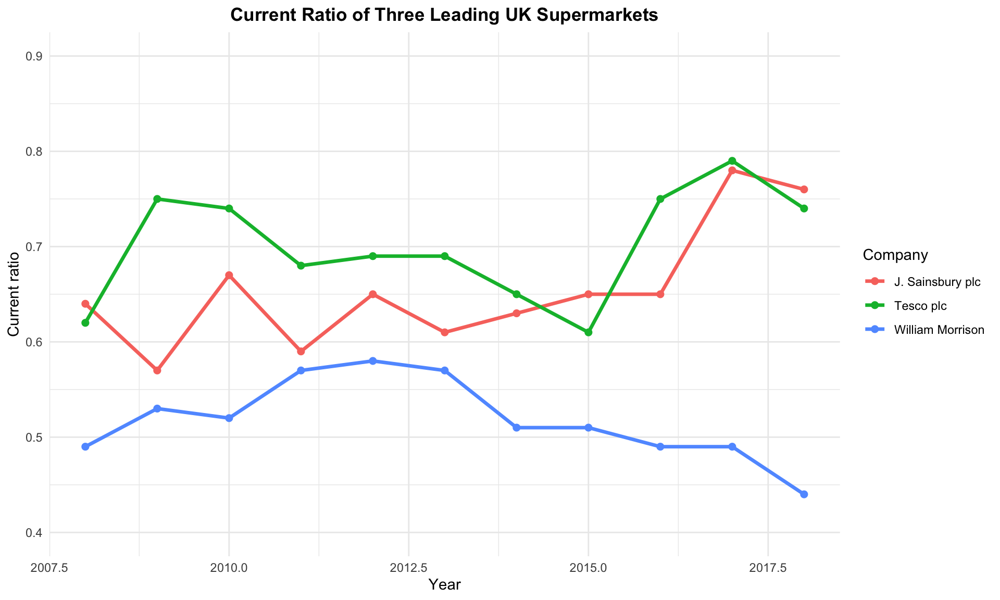

flowchart TD
A[Financial planning] --> B[Investment project appraisal]
A --> C[Finance function]
A --> D[Financing and capital market operations]
C --> B
C --> D
C --> E[Financial control]
E --> B
E --> D
Corporate Financial Management
Day 1: Financial Framework & Analysis
Course Introduction
Welcome to the intensive 4-day Corporate Financial Management module. This condensed format covers the essential concepts and techniques needed for effective financial decision-making in modern organizations.
Module Learning Outcomes
By the end of this module, you will be able to:
- Demonstrate knowledge and understanding of the investment, financing and dividend decisions
- Assess the potential and significance of various sources of finance
- Critically examine issues surrounding corporate financing and dividend policy
- Recognize key concepts and theories of financial management
The Finance Function in Organizations
Financial management involves making key decisions about how resources are acquired and utilized within an organization. The finance function serves as the nexus for critical business activities.
The finance manager’s responsibilities typically include:
- Financial planning and forecasting
- Capital investment decisions
- Working capital management
- Funding and financing decisions
- Financial risk management
- Stakeholder communication
Discussion point: What financial management challenges have you observed or experienced in your organization?
Primary Business Objectives
The conventional view holds that the primary objective of a business is shareholder wealth maximization. This objective:
- Is not the same as profit maximization
- Requires considering the needs of other stakeholders
- Often demands high ethical standards
Shareholders have specific characteristics that justify prioritizing their interests:
- They are the effective owners
- They have a residual claim and bear risk
- They drive entrepreneurial activity through seeking returns
However, pursuing shareholder wealth maximization can be problematic:
- May undermine the status of other stakeholders
- Can encourage excessive cost-cutting
- Might promote unethical behavior
Limitations of Profit Maximization
Unlike shareholder wealth maximization, profit maximization as a sole objective has significant limitations:
- Profit is an imprecise term
- Profit cannot be objectively determined
- Profit takes no account of risk
- Uncertain timeframe (short vs. long-term)
- Ignores opportunity costs
- Neglects stakeholder interests
Key Insight
Maximizing profit in a single period may actually diminish shareholder wealth over the long term due to factors like reduced investment, damage to reputation, or increased risk.
Agency Theory and Corporate Governance
The principal-agent relationship creates potential conflicts:
- Directors (agents) act on behalf of shareholders (principals)
- Directors should make decisions maximizing shareholder benefit
- However, their personal interests may lead to sub-optimal decisions
- Example: Prioritizing short-term profitability over long-term value when bonuses are tied to annual profit
The UK Corporate Governance Code aims to mitigate these issues by ensuring:
- Clear delineation of directors’ powers and responsibilities
- Appropriate checks and balances within the organization
The code covers five main areas: 1. Board leadership and company purpose 2. Division of responsibilities 3. Composition, succession and evaluation 4. Audit, risk and internal control 5. Remuneration
Financial Information for Decision Making
Financial statements provide the foundation for all financial analysis and decision-making.
| £000 | £000 | |
|---|---|---|
| Credit sales revenue | ||
| Less Cost of sales: | ||
| Opening inventories | ||
| Add Purchases | ||
| Less Closing inventories | ||
| Gross profit | ||
| Less: | ||
| Credit card discounts | ||
| Rent and rates | ||
| Other costs | ||
| Depreciation of fittings | ||
| Profit for the period |
| £000 | |
|---|---|
| ASSETS | |
| Non-current assets | |
| Fittings | |
| Less Accumulated depreciation | |
| Current assets | |
| Inventories | |
| Trade receivables | |
| Total assets | |
| EQUITY AND LIABILITIES | |
| Equity | |
| Share capital | |
| Retained earnings | |
| Current liabilities | |
| Trade payables | |
| Bank overdraft | |
| Total equity and liabilities |
Financial statements provide information about:
- Profitability and performance
- Financial position and stability
- Cash flow and liquidity
- Changes in financial position
This information helps stakeholders assess: - Past performance - Current position - Future prospects
Financial Analysis Using Ratios
Financial ratio analysis provides a systematic approach to evaluating a company’s financial health. Ratios help transform raw financial data into meaningful insights.
The Financial Health Framework
flowchart TD
A[Financial ratios] --> B[Profitability]
A --> C[Efficiency]
A --> D[Liquidity]
A --> E[Financial gearing]
A --> F[Investment]
Profitability Ratios
Profitability ratios measure a company’s ability to generate earnings relative to sales, assets, and equity.
| Ratio | Formula | Purpose |
|---|---|---|
| Return on Ordinary Shareholders’ Funds (ROSF) | \(\frac{\text{Profit for the year less preference dividend}}{\text{Ordinary share capital + Reserves}} \times 100\) | Measures return earned for ordinary shareholders |
| Return on Capital Employed (ROCE) | \(\frac{\text{Operating profit}}{\text{Share capital + Reserves + Non-current liabilities}} \times 100\) | Evaluates efficiency of all long-term capital |
| Operating Profit Margin | \(\frac{\text{Operating profit}}{\text{Sales revenue}} \times 100\) | Shows profitability of operations |
| Gross Profit Margin | \(\frac{\text{Gross profit}}{\text{Sales revenue}} \times 100\) | Indicates basic profitability before other costs |
ROCE can be broken down into its key components:
\(\text{ROCE} = \frac{\text{Operating profit}}{\text{Sales revenue}} \times \frac{\text{Sales revenue}}{\text{Long-term capital employed}}\)
This demonstrates that ROCE is affected by both: - Profit margin (efficiency of operations) - Asset turnover (efficiency of capital usage)

Efficiency Ratios
Efficiency ratios evaluate how effectively a company uses its assets and manages its operations.
| Ratio | Formula |
|---|---|
| Average inventories turnover period | \(\frac{\text{Average inventories held}}{\text{Cost of sales}} \times 365\) |
| Average settlement period for trade receivables | \(\frac{\text{Average trade receivables}}{\text{Credit sales revenue}} \times 365\) |
| Average settlement period for trade payables | \(\frac{\text{Average trade payables}}{\text{Credit purchases}} \times 365\) |
| Sales revenue to capital employed | \(\frac{\text{Sales revenue}}{\text{Share capital + Reserves + Non-current liabilities}}\) |
| Sales revenue per employee | \(\frac{\text{Sales revenue}}{\text{Number of employees}}\) |
Efficiency Ratio Interpretation
- Lower inventory and receivables periods typically indicate better efficiency
- Higher payables period may indicate stronger supplier relationships but could also suggest liquidity problems
- Higher sales to capital employed suggests more efficient use of capital
Liquidity Ratios
Liquidity ratios assess a company’s ability to meet short-term obligations.
| Ratio | Formula |
|---|---|
| Current ratio | \(\frac{\text{Current assets}}{\text{Current liabilities}}\) |
| Acid test ratio | \(\frac{\text{Current assets (excluding inventories)}}{\text{Current liabilities}}\) |

UK supermarkets typically operate with current ratios below 1.0 because:
- They have strong bargaining power with suppliers (longer payment terms)
- Inventory turnover is rapid
- Customers typically pay at point of sale
- They have predictable cash flows
- They hold minimal reserves due to efficient operations
Traditionally, guidelines suggest: - Current ratio: 2:1 - Acid test ratio: 1:1
However, these benchmarks vary significantly by: - Industry - Business model - Market position - Economic conditions
Gearing Ratios
Gearing ratios evaluate the extent to which a company is financed by debt versus equity.
| Ratio | Formula |
|---|---|
| Gearing ratio | \(\frac{\text{Long-term (non-current) liabilities}}{\text{Share capital + Reserves + Long-term (non-current) liabilities}} \times 100\) |
| Interest cover ratio | \(\frac{\text{Operating profit}}{\text{Interest payable}}\) |
Gearing Trade-offs
High Gearing Benefits: - Potential for higher returns to shareholders - Tax advantages of debt (interest is tax-deductible) - No dilution of ownership
High Gearing Risks: - Increased financial risk - Fixed interest obligations - Potential constraints on future borrowing - More vulnerable during economic downturns
Investment Ratios
Investment ratios help investors assess the attractiveness of a company’s shares.
| Ratio | Formula |
|---|---|
| Dividend payout ratio | \(\frac{\text{Dividends announced for the year}}{\text{Earnings for the year available for dividends}} \times 100\) |
| Dividend cover ratio | \(\frac{\text{Earnings for the year available for dividends}}{\text{Dividends announced for the year}}\) |
| Dividend yield ratio | \(\frac{\text{Dividend per share}}{\text{Market value per share}} \times 100\) |
| Ratio | Formula |
|---|---|
| Earnings per share | \(\frac{\text{Earnings available to ordinary shareholders}}{\text{Number of ordinary shares in issue}}\) |
| Price/earnings ratio (P/E) | \(\frac{\text{Market value per share}}{\text{Earnings per share}}\) |
The P/E ratio and dividend yield vary significantly across industries:
- Technology firms typically have high P/E ratios (often exceeding 30)
- Utility companies often have lower P/E ratios (around 12-15) but higher dividend yields
- Financial institutions generally have moderate P/E ratios with above-average dividend yields
- Growth industries prioritize reinvestment over dividends
Business Failure Prediction
Financial ratios can help predict business failure before it occurs.
Key indicators that may signal potential business failure: - Declining profitability ratios - Deteriorating liquidity ratios - Increasing gearing ratios - Lengthening receivables collection periods - Shortening payables payment periods
The Z-score model combines multiple ratio indicators into a single predictive formula:
\(Z = 1.2a + 1.4b + 3.3c + 0.6d + 1.0e\)
Where: - a = Working capital/Total assets - b = Accumulated retained profits/Total assets - c = Operating profit/Total assets - d = Book value of shares/Total liabilities - e = Sales revenue/Total assets
Interpretation: - Z > 2.99: “Safe” zone - 1.81 < Z < 2.99: “Grey” zone - Z < 1.81: “Distress” zone
Limitations of Ratio Analysis
While ratios provide valuable insights, they have important limitations:
Data-Related Limitations: - Quality of financial statements - Creative accounting - Inflation effects - Statement of financial position timing issues
Application Limitations: - Over-reliance on ratios - Difficulties in finding comparable benchmarks - Industry-specific factors - Non-financial factors are excluded
Important
Ratios are tools for asking better questions, not providing definitive answers. They should be used as part of a broader analytical framework.
Practice Examples
Let’s apply these concepts to solve practical problems:
For the year just ended, Ditto plc had earnings per share of £0.25 and a dividend payout ratio of 60%. The price earnings ratio is 20 times. What is the dividend yield?
Solution:
# Given information
EPS <- 0.25 # Earnings per share in £
DPR <- 0.60 # Dividend payout ratio (60%)
PE <- 20 # Price earnings ratio
# Calculate dividend per share
DPS <- EPS * DPR
DPS[1] 0.15# Calculate market value per share
Market_Value <- EPS * PE
Market_Value[1] 5# Calculate dividend yield
Dividend_Yield <- (DPS / Market_Value) * 100
Dividend_Yield[1] 3A business has a ROCE of 20% and a sales revenue to long-term capital employed ratio of 5 times. It has an operating profit of £2m. What is the sales revenue of the business?
Solution: ROCE = Operating profit / Capital employed = 20% Capital employed = Operating profit / ROCE = £2m / 0.20 = £10m
Sales revenue / Capital employed = 5 Therefore, Sales revenue = 5 × £10m = £50m
A business has the following ratios: - Gross profit margin: 25% - Operating expenses to sales: 10% - Interest cover: 3 times - Sales for the period: £20m
What is the profit before tax?
Solution: Gross profit = 25% × £20m = £5m Operating expenses = 10% × £20m = £2m Operating profit = £5m - £2m = £3m Interest cover = Operating profit / Interest expense = 3 Interest expense = Operating profit / Interest cover = £3m / 3 = £1m Profit before tax = Operating profit - Interest expense = £3m - £1m = £2m
Key Takeaways
Next Session Preview
In this afternoon’s session, we will explore: - Capital investment decisions - Investment appraisal techniques - Handling risk and uncertainty in investment decisions - Real-world application of investment appraisal